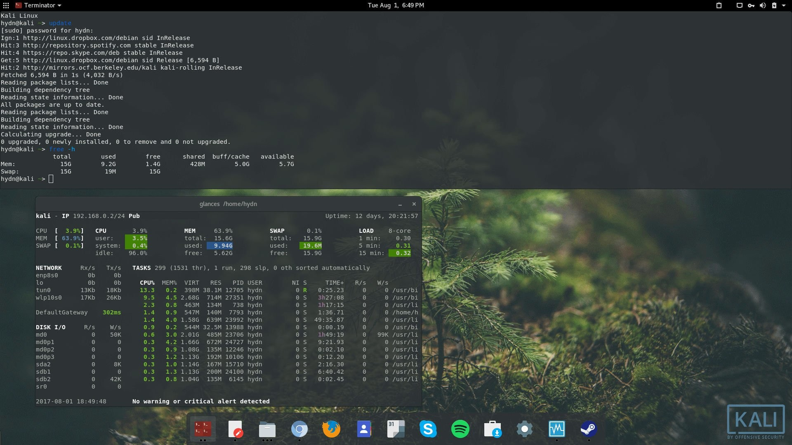
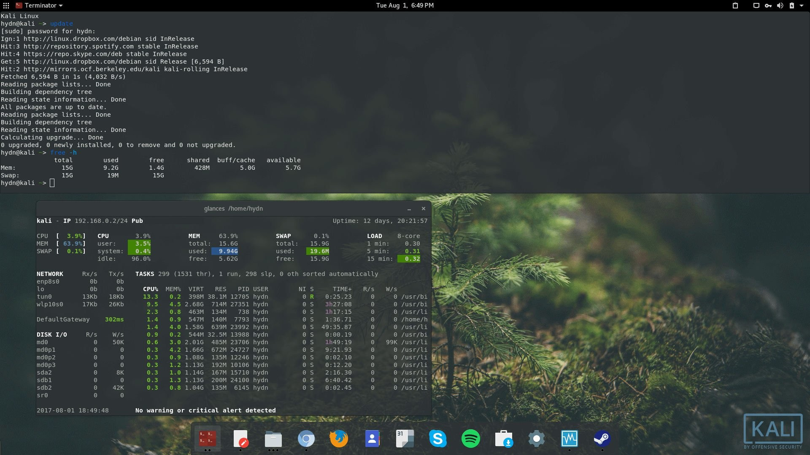
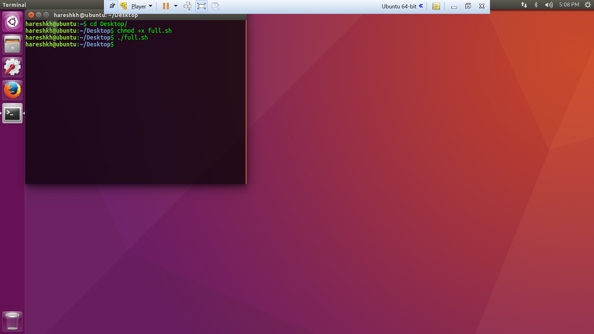
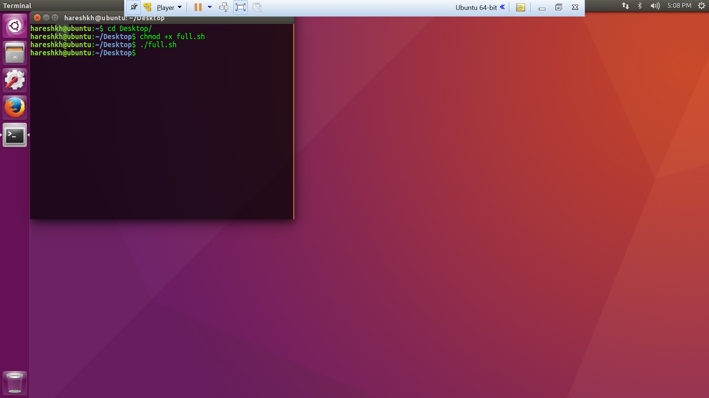

Opis linuxa
czym jest linux?
Linux to rodzina systemów operacyjnych będąca oprogramowaniem FOSS (Free, and Open source). Rodzina obejmuje takie systemy jak: Android, Debian, arch, ubuntu i wiele więcej. Pierwsza dystrybucja linuxa została wydana w 1991 roku.
historia linuxa
W 1991 roku Linus Davis stworzył jądro systemu operacyjnego, przeznaczone dla procesorów rodziny intela. Do utworzenia reszty rzeczy potrzebnych do działania systemu operacyjnego wykorzystano GNU. Jednym z najstarszych do dziś rozwijanych systemów jest slackware linux, czy dużo bardziej znany Debian, wydany miesiąc później.
Dystrybucje linuxa
ogólny zarys
Linuxa można podzielić na Dystrybucje, czyli odmiany systemu operacyjnego. Niektóre dystrybucje są rodzinami samymi w sobie (np Debian - Ubuntu, Libranet, Lindows), które mogą się dzielić ze względu na np. wykorzystanie Interfejsu graficznego (np. Ubuntu - Ubuntu, kubuntu, lubuntu) Linux ma ponad 600 dystrybucji, z czego ok. 500 jest aktywnie wspieranych.
pogrupowanie dystrybucji i Lista
W tej części artykułu postaram się opisać, i wymienić przykładowe systemy grupowene poprzez menedżer pakietów
RPM
Głównymi Dystrybucjami wykorzystującymi Rpm to Red Hat i OPENSuse
- Red hat
- CentOS
- OPENSuse
- Fedora
- Mandrke Linux
Deb
Dystrybucję wykorzystujące Deb, to dystrybucje z rodziny Debiana. Debian opiera się na oprograowaniu FREEWARE.
- Debian
- ubuntu
- linux
- Pop! os
- Q4os
- SparkyLinux
- ZorinOs
- Mx Linux
- KDE neon
- Deepin OS
Pacman
Pacman to menager pakietów, który potrafi rozwiązywać zależności i instalować automatycznie ważne pakiety. Systemy wykorzystujące Pacman to systemy bazowane na Arch Linux.
- Arch Linux
- Artix linux
- ArchLabs
- Black Arch
- Chacra Linux
- EndeavourOS
- Frugalware
- Garuda Linux
- LinHes
- Manjaro
- SteamOS
Zdjęcia z linuxa
 


 



{kind=link}
{kind=link}
{kind=link}
{kind=link}